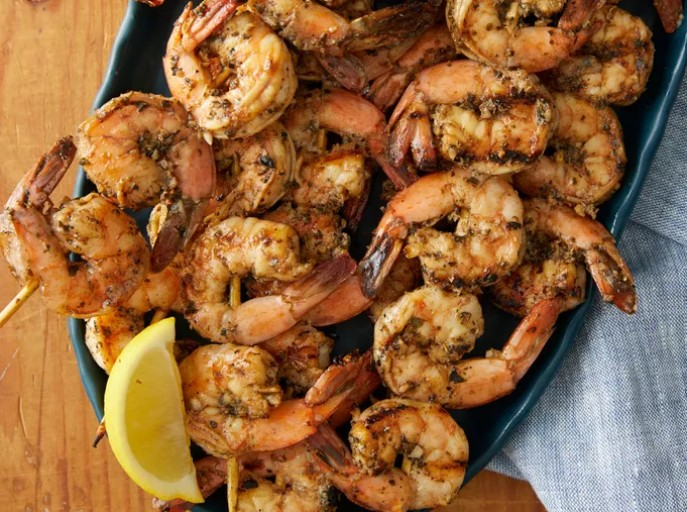

Home
Grilled Garlic and Herb Shrimp

Description
These succulent grilled shrimp are simple to make for a delicious summer
cookout. Try this mouthwatering grilled shrimp recipe made with brown
sugar, basil, and a host of Italian seasonings for an irresistible seafood
experience.
Ingredients
- Ground Paprika
- Fresh Miced Garlic
- Italian Seasoning
- Lemon Juice
- Olive Oil
- Ground Black Pepper
- Dried Basil Leaves
- Brown Sugar
- 2 Pounds of Large Shrimp, peeled and deveined
Steps
-
Whisk paprika, garlic, Italian seasoning, lemon juice, olive oil,
pepper, basil, and brown sugar together in a bowl until thoroughly
blended.
-
Stir in shrimp and toss to evenly coat with the marinade. Cover and
refrigerate at least 2 hours, turning once.
-
Preheat an outdoor grill for medium-high heat. Lightly oil grill grate,
and place about 4 inches from heat source.
- Remove shrimp from marinade, drain excess, and discard marinade.
-
Place shrimp on preheated grill and cook, turning once, until opaque in
the center, 5 to 6 minutes. Serve immediately.